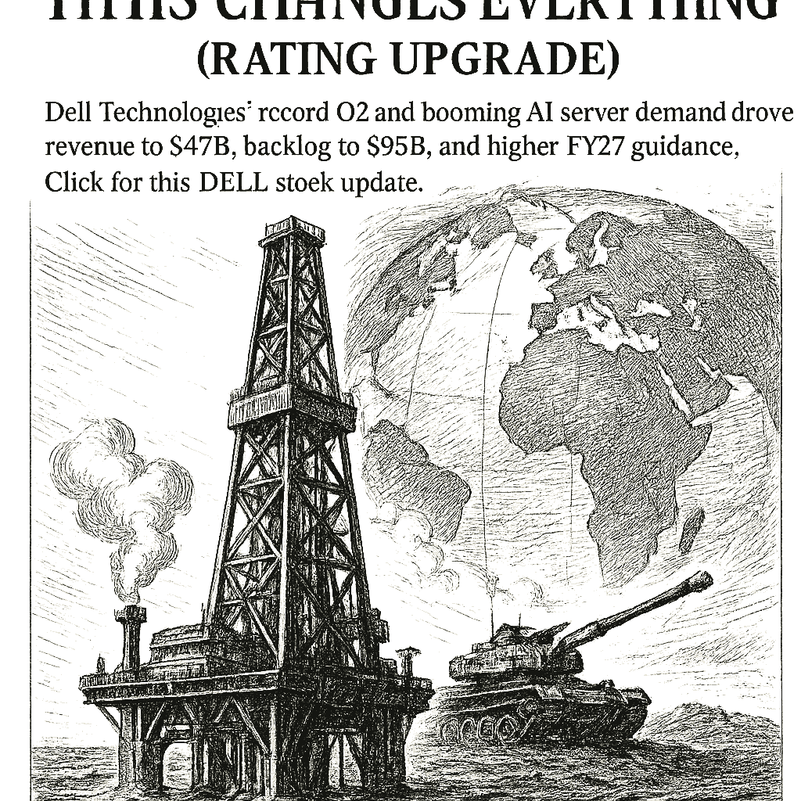

SPY
Current: $762.62Change: -3.46 (-0.45%)
Updated:
Source: yahoo_chartFreshness: fresh


Dell Technologiesâ record Q2 and booming AI server demand drove revenue to $47B, backlog to $95B, and higher FY27 guidance. Click for this DELL stock update.

Today's Headline: Dell Q2 Earnings: This Changes Everything (Rating Upgrade)
Setup: Dell Technologiesâ record Q2 and booming AI server demand drove revenue to $47B, backlog to $95B, and higher FY27 guidance. Click for this DELL stock update.
Primary Topic: Oil Prices and Dell Earnings
Specific Development: Oil prices have surged to $95 per barrel due to renewed U.S. military strikes in Iran, while Dell reported record earnings driven by AI server demand.
Why Today Is Different: The combination of escalating geopolitical tensions and strong corporate earnings creates a volatile market environment, influencing investor sentiment across sectors.
Secondary Topics: Geopolitical Tensions; Technology Earnings
Tone: Cautious Optimism
Sectors: Energy; Technology
Companies: Dell Technologies
Commodities: Oil; Brent; Copper
Countries Or Regions: Iran; United States
Macro Themes: Geopolitical Risk; Earnings Growth
Why This Story: The interplay between geopolitical events and corporate performance is critical for market direction, impacting investment strategies.
Why This Matters: Dell Q2 Earnings: This Changes Everything (Rating Upgrade) is the clearest current evidence-led frame for Joshua's observation-only review; missing facts remain explicit intelligence gaps.

Summary: Global markets are reacting to rising oil prices and strong earnings reports, particularly in the tech sector.
What Happened Overnight: Oil prices surged, with Brent crude rising over 5%, while major indices showed mixed performance amid geopolitical concerns.
What Changed Materially: The increase in oil prices and Dell's strong earnings report have shifted market sentiment.
Which Assets Sectors Are Affected: Energy stocks are benefiting from rising oil prices, while tech stocks are reacting positively to Dell's earnings.
Does It Look Like Noise Or A Real Regime Input: This appears to be a significant regime input due to the geopolitical context and corporate performance.
Why This Matters: Joshua can use verified cross-asset moves and deterministic risk context while keeping causation explicitly unresolved.

AVGO Earnings Results — 2026-09-02, After Close
Consensus EPS: $3.30
Year-ago EPS: unavailable
Expected EPS growth: unavailable
Consensus revenue: $29.9B
Year-ago revenue: unavailable
Expected revenue growth: unavailable
Actual EPS: unavailable vs $3.30 expected
Beat/Miss: unavailable — canonical actual EPS was not supplied.
Actual revenue: unavailable vs $29.9B expected
Beat/Miss: unavailable — canonical actual revenue was not supplied.
Expectation provenance: unresolved_event_timing · Snapshot: unavailable
Source: finnhub_earnings_calendar · As of: 2026-09-02T13:59:03.424679+00:00 · Freshness: current

- WOPR learning pipeline: Learning present — untrusted
- Candidates evaluated 24h: 0
- Current gate: Learning trust
- Notification ledger events in 24h: 14
- Pending orders created/canceled/filled/expired: 2/1/1/1
- Pending lifecycle interpretation: Pending-order cancellations have trackable reasons and no obvious rapid churn pattern.
- Portfolio risk: Label: High / Score: 92.1
- Latest intelligence gap report: intelligence_gap_report_2026-08-30.pdf
Why This Matters: The active gate is Learning trust, so the key question is why candidates are stopping before approval, not how to force trades.

- Sentinel role: infrastructure and operational status only.
- State: ONLINE
- Last successful validation: 2026-09-02T14:14:35.786672+00:00
- Payloads accepted/rejected: 16275/0
- Node health score: 100
Why This Matters: Sentinel is ONLINE, so Joshua should use its context only to the extent the latest accepted pulse is fresh and authenticated.

CANDIDATES MOVING THROUGH JOSHUA'S INVESTMENT-REVIEW WORKFLOW
FROZEN DAILY BRIEF SNAPSHOT | 2026-09-02T14:14:10.394816+00:00
QUEUE SUMMARY | Investment Ready: 0 | Waiting for Price: 0 | Waiting for Evidence: 0 | Research Underway: 2 | Governance Hold: 3 | Monitor Only: 0
Investment-ready status: No candidates are currently Investment Ready.
#6 PLTR - Governance Hold [Moved Up 9->6]
Joshua's Thesis: Positive thesis not yet established.
Why Waiting: Governance gate has not cleared.
Price: 174.15 now; 126.93 preferred entry
What Unlocks It: Governance gate clears; Clear valuation support; Evidence that the business quality matches the risk being taken
Portfolio Fit: 66.7/100 — HIGH ↑
Portfolio Fit Drivers: projected Technology exposure 41.7%; projected AI software exposure 33.3%; candidate amount $100 vs $201 currently allocated
Candidate Risk: 25.3/100 — LOW ↓
Risk Drivers: projected Technology exposure 41.7%; projected AI software exposure 33.3%; candidate amount $100 vs $201 currently allocated
Next: Re-evaluate after the recorded gate clears. Owner: Columbo.
#9 DIA - Research Underway [Moved Down 7->9]
Joshua's Thesis: Positive thesis not yet established.
Why Waiting: Research evidence is still being gathered.
Price: Current price unavailable.; Preferred entry not established.
What Unlocks It: Clear valuation support; Evidence that the business quality matches the risk being taken; Independent evidence streams pointing the same way
Portfolio Fit: 78.1/100 — VERY HIGH ↓
Portfolio Fit Drivers: projected ETF exposure 33.3%; projected Broad market exposure 33.3%; candidate amount $100 vs $201 currently allocated
Candidate Risk: 13.9/100 — VERY LOW ↑
Risk Drivers: projected ETF exposure 33.3%; projected Broad market exposure 33.3%; candidate amount $100 vs $201 currently allocated
Next: Clear valuation support; Evidence that the business quality matches the risk being taken; Independent evidence streams pointing the same way. Owner: Columbo.
#10 AVGO - Research Underway [Moved Up 15->10]
Joshua's Thesis: Positive thesis not yet established.
Why Waiting: Research evidence is still being gathered.
Price: 367.94 now; 370.11 preferred entry
What Unlocks It: Clear valuation support; Evidence that the business quality matches the risk being taken; Independent evidence streams pointing the same way
Portfolio Fit: 24.7/100 — LOW ↑
Portfolio Fit Drivers: projected Technology exposure 41.7%; projected AI infrastructure exposure 41.7%; candidate amount $100 vs $201 currently allocated
Candidate Risk: 72.0/100 — HIGH
Risk Drivers: projected Technology exposure 41.7%; projected AI infrastructure exposure 41.7%; candidate amount $100 vs $201 currently allocated
Next: Fill before expires_at while entry conditions remain valid. Owner: Columbo.
#20 ANGX - Governance Hold
Joshua's Thesis: Positive thesis not yet established.
Why Waiting: Governance gate has not cleared.
Price: 4.47 now; 4.45 preferred entry
What Unlocks It: Governance gate clears; Clear valuation support; Evidence that the business quality matches the risk being taken
Portfolio Fit: 0.0/100 — VERY LOW
Portfolio Fit Drivers: projected Unclassified exposure 66.8%; projected Unclassified exposure 66.8%; candidate amount $100 vs $201 currently allocated
Candidate Risk: 97.7/100 — VERY HIGH ↑
Risk Drivers: projected Unclassified exposure 66.8%; projected Unclassified exposure 66.8%; candidate amount $100 vs $201 currently allocated
Next: Re-evaluate after the recorded gate clears. Owner: Advisory Committee.
#24 RCL - Governance Hold
Joshua's Thesis: Positive thesis not yet established.
Why Waiting: Governance gate has not cleared.
Price: 270.30 now; 282.98 preferred entry
What Unlocks It: Governance gate clears; Clear valuation support; Evidence that the business quality matches the risk being taken
Portfolio Fit: 0.0/100 — VERY LOW
Portfolio Fit Drivers: projected Unclassified exposure 66.8%; projected Unclassified exposure 66.8%; candidate amount $100 vs $201 currently allocated
Candidate Risk: 97.7/100 — VERY HIGH ↑
Risk Drivers: projected Unclassified exposure 66.8%; projected Unclassified exposure 66.8%; candidate amount $100 vs $201 currently allocated
Next: Re-evaluate after the recorded gate clears. Owner: Columbo.
Observation only. This section creates no recommendation, order, authority, or execution instruction.

- Which recorded governance requirement must clear before PLTR can advance?
- Which recorded missing evidence item would most change Joshua's current view of DIA?
- If AVGO reaches the recorded price condition <= 370.11, which recorded evidence and governance requirements would still remain?
- Which recorded governance requirement must clear before ANGX can advance?
- What AVGO EPS or revenue result would materially change the current recorded thesis?

The surge in oil prices due to geopolitical tensions, coupled with strong earnings from Dell, suggests a shift in market sentiment. Investors may need to reassess their strategies in light of these developments, particularly in energy and technology sectors.

Compared to: 2026-09-01
- Market weather: Balanced -> Elevated
- Top opportunity: Still MARA
- Joshua gate: Evidence -> Learning trust
- 2Y Treasury.last_price: 4.39 -> 4.39 (unchanged); 2Y Treasury.last_price changed 0.00% versus the prior frozen Chronicle snapshot.
- 2Y Treasury.percent_change: 1.15207373271889 -> 1.15207373271889 (unchanged); 2Y Treasury.percent_change changed 0.00% versus the prior frozen Chronicle snapshot.
- 10Y Treasury.last_price: 4.79 -> 4.79 (unchanged); 10Y Treasury.last_price changed 0.00% versus the prior frozen Chronicle snapshot.
- 10Y Treasury.percent_change: 0.8421052631578954 -> 0.8421052631578954 (unchanged); 10Y Treasury.percent_change changed 0.00% versus the prior frozen Chronicle snapshot.
- 30Y Treasury.last_price: 5.27 -> 5.27 (unchanged); 30Y Treasury.last_price changed 0.00% versus the prior frozen Chronicle snapshot.
- 30Y Treasury.percent_change: 0.3809523809523728 -> 0.3809523809523728 (unchanged); 30Y Treasury.percent_change changed 0.00% versus the prior frozen Chronicle snapshot.
- SPY.last_price: 762.6 -> 762.625 (up); SPY.last_price changed 0.00% versus the prior frozen Chronicle snapshot.
- SPY.percent_change: -0.454260651629075 -> -0.45099728487886914 (up); SPY.percent_change changed 0.72% versus the prior frozen Chronicle snapshot.
- QQQ.last_price: 707.387 -> 705.485 (down); QQQ.last_price changed 0.27% versus the prior frozen Chronicle snapshot.
- QQQ.percent_change: -0.5599055343913942 -> -0.8272769444873963 (down); QQQ.percent_change changed 47.75% versus the prior frozen Chronicle snapshot.
- IWM.last_price: 292.43 -> 292.34 (down); IWM.last_price changed 0.03% versus the prior frozen Chronicle snapshot.
- IWM.percent_change: -2.174422105509651 -> -2.204529488509026 (down); IWM.percent_change changed 1.38% versus the prior frozen Chronicle snapshot.

The combination of geopolitical risks and strong corporate earnings has shifted the focus from a cautious market outlook to a more dynamic investment environment.
No new warnings have emerged; however, the geopolitical landscape remains a critical area to monitor.
Portfolio Construction Review
Current allocation: 200.65 allocated.
Largest sector: Unclassified at 50.2%.
Largest theme: Unclassified at 50.2%.
Diversification: Mixed (49.8).
Cash allocation: 79.9% unallocated.
Recommended exposure: MARA at portfolio-fit score 78.1.
Portfolio fit: MARA improves diversification while preserving portfolio fit.
Why This Matters: Portfolio Manager evaluates whether an opportunity improves this portfolio; it does not select the investment, vote, or authorize execution.

Monitor geopolitical developments closely as they could significantly impact market dynamics.

| Can trigger trade | no |
| Can modify trade rules | no |
| Can add watch items | yes |
| Can add review questions | yes |
| Can adjust confidence notes | yes |
| Input policy | external_intelligence_plus_sanitized_internal_observations |
| External policy | The Editor-in-Chief synthesizes current world/market context where available and labels unknowns; provider/model provenance remains separate. |
| Internal policy | Joshua/WOPR/Sentinel facts are supplied as sanitized observation-only summaries. |
| Editorial model | gpt-4o-mini |
- Selected by a deterministic daily rotation through symbols already present in the persisted Chronicle snapshot.
- Next earnings: September 1, 2026 (after close); status: post_event.
- Source: finnhub_earnings_calendar.
- Related event on the canonical wire: Dell Stock Slips Ahead of Q2 Earnings
- Dell Falls 4% Ahead of Earnings as Its 266% Rally Raises the Bar, Super Micro and Hewlett Packard Enterprise Slip
- Desk: earnings; source: Yahoo; linked symbols: DELL.
- Published: 9/1/26 10:08 MST.
- High-impact watch: Quarterly Financial Report--Retail Trade - 9/8/26 07:00 MST.
- Affected assets: US equities, Treasuries, USD; source: census_release_schedule.
- DELL earnings: September 1, 2026, after close.
- AVGO earnings: September 2, 2026, after close.
- FDX earnings: September 16, 2026, time unknown.
- Energy: 3.12% session performance; source: persisted sector ledger.
- Health Care: 0.20% session performance; source: persisted sector ledger.
- Communication Services: -0.01% session performance; source: persisted sector ledger.
- SILVER: -1.72% recorded move; price: 65.84.
- Session: open; catalyst status: no_verified_catalyst; source: yahoo_chart.
- Oil Price Movements; why it matters: Rising oil prices can impact inflation and economic growth forecasts.
- State: weakening; score: 35.20/100; advance/decline ratio: 0.45.
- Above 50-day average: 58.00%; sample: 119; provider: sentinel_sampled_breadth.
- Decision outcomes evaluated: 16; currently untestable: 0.
- Warning review: still watching 3; confidence calibration: insufficient_sample.
- Current macro regime: defensive_rotation; change probability: unavailable.
- Risk dashboard: cautious (57/100); breadth: weakening; sentiment: neutral.
- Scenario board only - a current-state observation, not a forecast or execution instruction.

- Helped architect Berkshire Hathaway's quality-focused investment approach and popularized multidisciplinary mental models for decision-making.
- Published quotation: "The big money is not in the buying and selling, but in the waiting."
- Published framework: Combine value discipline with business quality, strong incentives, and a long runway. Use multidisciplinary models, invert problems, demand a margin of safety, and wait patiently for a small number of unusually favorable opportunities.
- Committee lens: Munger challenges Joshua to examine incentives, base rates, second-order effects, and avoidable cognitive errors before accepting an apparently attractive thesis.
- Public philosophy profile only; no participation, endorsement, or current recommendation is implied.
- Which recorded missing evidence item would most change Joshua's current view of DIA?
- MARA: Current symbol-specific prediction confidence is unavailable.
- MARA: No canonical symbol-specific material event is linked.
- Attach the missing MARA evidence before the next committee review.
- Which recorded governance requirement must clear before PLTR can advance?
- Which recorded missing evidence item would most change Joshua's current view of DIA?
- If AVGO reaches the recorded price condition <= 370.11, which recorded evidence and governance requirements would still remain?
- Which recorded governance requirement must clear before ANGX can advance?
- Evidence agenda: MARA - Current symbol-specific prediction confidence is unavailable.
- Proposed review: Dell's Earnings Report; why it matters: Dell's strong performance could signal a broader recovery in tech stocks.
- Proposed review: Geopolitical Developments; why it matters: Escalating tensions could lead to increased market volatility.
- Canonical instruments reviewed: 24; delayed 6, fresh 18.
- Leading sources: yahoo_chart (21), treasury_official_yield_curve (3).
- Snapshot recorded: 9/2/26 06:59 MST.
Dell Q2 Earnings: This Changes Everything (Rating Upgrade)
Storm meter: Balanced
#6 PLTR - Governance Hold [Moved Up 9->6]
Observation mode: observation_only
Watch: Dell's Earnings Report; why it matters: Dell's strong performance could signal a broader recovery in tech stocks.
Question: Which recorded governance requirement must clear before PLTR can advance?